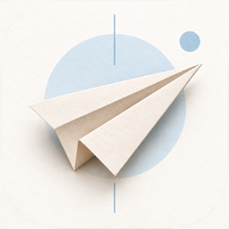

01 — Principles
原則
01
紙の上に、墨で書く
地は温かい紙色、文字はほぼ黒の墨。これは個人のアーカイブで、ダッシュボードではない。何か月も前に見つけた場所を読み返す時間が、落ち着いて見えるように。
02
明朝は声、ゴシックは道具
読ませたいもの（見出し、場所やイベントの名前）は明朝。操作するもの、説明するもの、数えるものはゴシック。日本の編集デザインの昔からの分担をそのまま使う。
03
色は、意味があるときだけ
藍は「押せる」、朱は「日付がある」、苔は「行った」。アイテムごとの淡い色は見分けるため。飾りの色はアイコン由来の空色と紙飛行機の色に限り、文字や操作には使わない。
04
区切りは、罫線と余白で
箱で囲まずに、細い罫線と余白で構造をつくる。カードや角丸は、それが独立した「もの」のときだけ。影は本当に浮いているものだけにつける。
02 — Color
色
アプリの src/constants/theme.ts の値を正とする。コントラストを測って決めた値なので、Web もこちらに揃える。パレットは1つ。アプリ用と Web 用を分けない。コントラスト比は WCAG 2 の計算式で実測した値（AA は本文 4.5:1 以上）。
地と墨
紙 paper
#FAF8F4
App colors.paper
Web --paper
画面・ページの地。純白にしない。
Web（LP・文書）は現在 #F7F3EC 現状と違う
面 surface
#FFFFFF
App colors.surface
Web --surface
紙の上に置く独立した「もの」（シート、入力欄、カード）。
Web は現在 #FCFAF6 現状と違う
沈み sunken
#F2EEE6
App colors.sunken
Web --sunken
一段下がった面。画像のない枠、表の見出し、コード。
Web は現在 #F0EADF 現状と違う
墨 ink
#1A1815
App colors.ink
Web --ink
見出し・名前・本文。
紙 16.7 : 1 ／ Web は現在 #2B2926 現状と違う
淡墨 inkMuted
#5C564B
App colors.inkMuted
Web --ink-muted
説明文、リード文、メタ情報。
紙 6.9 : 1 ／ 沈み 6.3 : 1
薄墨 inkFaint
#706858
App colors.inkFaint
Web --ink-faint
補足、注記、非選択のタブ。文字色の下限。
紙 5.2 : 1 ／ 沈み 4.8 : 1
罫 rule
#E8E3D9
App colors.rule
Web --rule
区切りの細線。アプリは hairline、Web は 1px。
濃い罫 ruleStrong
#CFC8BA
App colors.ruleStrong
Web --rule-strong
入力欄の枠、リンクの下線。
意味の色
それぞれに「本体」「押したとき」「淡い地（wash）」がある。wash の上に本体色の文字を置いても 4.5:1 を超える。意味と関係ない場所でこの色を使わない。
藍 indigo — 押せる
#3D6891 ／ 押下 #2C5178 ／ #E7EEF6
ボタン、リンク、選択中のタブ・日付、地図のピン、フォーカスリング。
紙 5.5 : 1 ／ 白文字 5.9 : 1 ／ wash 5.0 : 1
LP は現在 #4C7294（沈みの上で 4.4 : 1、AA 未満） 現状と違う
朱 vermilion — 日付がある
#B44431 ／ #FBEAE5
「行く予定」、開催日・残り日数、日曜。「必須」の印。
紙 5.2 : 1 ／ 白文字 5.5 : 1 ／ wash 4.7 : 1
苔 moss — 行った
#3D7556 ／ 押下 #2D5C42 ／ #E6F1EA
「行った」の印、地図の訪問済みピン。
紙 5.1 : 1 ／ 白文字 5.4 : 1 ／ wash 4.7 : 1
警告 danger
#A33A28 ／ #F8EAE7
削除、エラー。朱と似ているので、必ず文言と一緒に。
紙 6.2 : 1 ／ wash 5.6 : 1
ほかに overlay rgba(26, 24, 21, .32)（シートの背後）、areaFill 藍の 8%（地図の旅行エリア）、googleAttribution #5E5E5E（Google の指定色。変えない）がある。土曜は藍、日曜は朱。
アイテムの色
画像のないアイテムがグレーの四角の列にならないよう、ID から6色のどれかを決めて（tintFor）、一覧・カレンダー・地図で同じ色をまとわせる。旅行の「日ごとの色」はこの6色の ink を順に使う（7日目で一巡、未定は薄墨）。見分けるための色で、意味はない。意味の色の代わりに使わない。
空
#E5EFF8 / #3A6A99
bar #8AB0D6
桜
#FBE9EC / #A8475F
bar #E3A0B0
抹茶
#E7F1E5 / #467443
bar #9CC596
山吹
#FAF0DB / #8E6317
bar #E0B872
藤
#EFEAF8 / #6A579C
bar #B2A3DB
珊瑚
#FCEBE3 / #A34E31
bar #EDA88C
wash の上の ink は 4.7〜5.1 : 1、ink の上の白文字は 5.3 : 1 以上。bar は線や縁のための色で、文字には使わない。
出典の色
各サービスの色に近づけた、出典マークの色。読む前に見分けがつくように。色をつけるのは小さなマークだけで、横のサービス名は文字色のまま。
#AE3A60
Google Maps #2E7449
TikTok #3B3547
X #3A3833
Web #35649A
手入力 #86561B
その他 #5C564B
ブランドの装飾色
アプリアイコンの淡い空色の円、細い縦線、紙飛行機の紙の色。LP の円や線のあしらい、紙飛行機のロゴ、空の状態やオンボーディングの挿絵に使う。装飾専用。文字・アイコン・押せるものには使わない（どれも紙の上で 4.5:1 に届かない）。

空色
#D6E4EF
--powder
空色・濃
#A8C4DC
--powder-deep
空の線
#7FA3C4
--sky-line
紙飛行機・明
#F3ECE0
--kraft-light
紙飛行機
#E3D6C2
--kraft
紙飛行機・影
#CDBDA3
--kraft-deep
紙飛行機・線
#8F7F67
--kraft-line
LP では現在 --powder --powder-2 --powder-3 --blue-line--beige --beige-2 という名前で使われている。値はほぼそのまま、名前だけ上の7つに揃える。
使い方
こうする
- 文字は墨・淡墨・薄墨の3段だけ。薄墨より薄い文字はつくらない
- 色を変えるときは、必ず文言やアイコンでも同じことを伝える
- 画面では色をトークン名で指定する（App は
colors.*、Web はvar(--*)） - ライトテーマだけが正式。アプリは
userInterfaceStyle: 'light'
こうしない
- 藍を「きれいだから」見出しや飾りに使う（押せるように見える）
- アイテムの色や出典の色で、状態（行った・行く予定）を表す
- 装飾色（空色・紙飛行機）を文字やボタンに使う
- 画面ごとに近い色を新しくつくる（#4C7294 と #3D6891 のような「ほぼ藍」）
ダークテーマは現在 Web の文書ページ（styles.css）にだけある。アプリが対応するときにこのページで正式に定義し、それまでは新しい画面・ページをライトだけで作る。
03 — Typeface
書体
Web フォントも同梱フォントも使わない。どの OS も明朝とゴシックを標準で持っているので、読み込み待ちも外部への通信もない。その代わり、書体の選び方（どの役割にどれを使うか）を厳密に決める。
3つの書体
基本の書体
あ Aa 15
ゴシック
本文、ラベル、ボタン、数値。迷ったらゴシック。
- iOS
- システム（Hiragino Sans）
fontFamily: undefined - Android
- システム（Noto Sans CJK JP）
- Web
- var(--font-sans)
強調の書体
あ 旅
明朝
見出しと、主役として置かれる名前。1画面・1ページの中で「読ませたい」ところだけ。
- iOS
- Hiragino Mincho ProN
- Android
- serif（Noto Serif CJK JP）
- Web
- var(--font-serif)
ロゴと装飾の欧文（Web のみ）
Travel 01
欧文セリフ
ワードマーク「Travel Inbox」、英字のアイブロウ、通し番号（01, 02…）、料金の大きな数字。和文や文章には使わない。アプリでは使わない。
- Web
- var(--font-latin)
Iowan Old Style → Palatino → Georgia
文書ページのコードだけは等幅（var(--font-mono)）を使う。これ以外の書体は増やさない。
明朝かゴシックか
明朝読ませるもの
- 画面やページの「顔」になる一文ログイン・オンボーディングのコピー、LP のキャッチと各セクションの見出し
- 画面タイトルタブのヘッダー（ホーム、カレンダー…）、プッシュした画面のナビゲーションバー
- 主役として置かれる名前場所・イベント・旅行の名前。一覧の行、カード、地図のシート、旅程の行、詳細画面のどこでも
- 見出しの役割をもつ数字カレンダーの「2026年9月」、近日開催の日付の「30」、プロフィールの件数
- Web 文書の章題プライバシーポリシーやサポートの h1〜h3
ゴシック使うもの・数えるもの
- 本文・説明・リード文段落、ヒント、エラーメッセージ
- 操作できるものボタン、タブ、チップ、セグメント、リンク、入力欄
- アプリのセクション見出し「最近の保存」「次の旅行」など。固有の名前ではなく棚の札なので、ゴシックの太字
- メタ情報とデータとしての数字出典・日付・距離・件数・時刻、カレンダーのマス目。数字は等幅（tabular-nums）
- 文中やバナーに入った名前カレンダーの「東京さんぽ 2日目」のバナー、通知、ボタンの文言の中の名前
迷ったら：その文字は「読ませたい」のか、「操作させたい・識別させたい」のか。前者なら明朝、後者ならゴシック。同じ種類のもの（たとえば場所の名前）は、画面が変わっても同じ書体・同じ型にする。
太さ
| 書体 | 使う太さ | どこで |
|---|---|---|
| ゴシック | 400 / 600 / 700 |
400 は本文。600 はラベル・ボタン・文中の強調。700 はゴシックの見出し（heading）だけ。 |
| 明朝（アプリ） | 600 |
すべて W6。スマホの画面サイズでは W3 が細すぎて、名前が読み流される。 |
| 明朝（Web） | 400 / 600 |
26px 以上の大見出し（hero・display）は 400（W3）で軽く。それより小さい title・itemTitle は 600（W6）。 |
- 明朝に 500 を指定しない。ヒラギノ明朝には W3 と W6 しかなく、500 は Mac では W3 になるが、Noto Serif JP（Android・一部の Windows）では Medium になり、OS によって見え方が変わる。LP の見出しが今 500 現状と違う
- 選択状態で太さを変えない。文字幅が変わって、タブやチップが選ぶたびに揺れる。選択は色と地の色で示す。アプリのチップ・インボックスのタブ・地図のセグメント・アイコン選択で 700 に変えている 現状と違う
- 和文にイタリック（斜体）は使わない。
文中の強調
- 文章の一部を強調するときはゴシックの 600（アプリは
bodyStrong、Web は<strong>）。 - 文章の途中を明朝に切り替えない。明朝は行や見出し単位で使う。
- 色での強調は意味があるときだけ（朱の「あと5日」など）。下線はリンクだけ。
04 — Type scale
文字サイズ
書体・サイズ・行間・太さ・字間は「型（トークン）」としてひとまとめに扱い、ばらして指定しない。アプリは <Text variant="…">、Web はクラスや CSS 変数で型を選ぶ。使ってよいサイズは下の表にあるものだけ。
アプリ
単位は pt（Dynamic Type で拡大される。上限は 1.6 倍）。見本は 1pt = 1px、幅 393pt の枠で表示している。
行きたい場所を、
ひとつに。
カレンダー
神宮外苑いちょう祭り
最近の保存
Instagram や Google Maps で見つけた場所を、共有ボタンからそのまま保存できます。
東京さんぽ 2日目
東京ビッグサイト · 〜10/14
行く予定 #次の旅行 9月
ホーム マップ インボックス
subheadingとbodyStrongはほぼ同じ（15pt・600）で、どちらを使うかが画面ごとにばらついている。subheadingはボタン専用のbuttonに改名し、見出しに使っていたところはheading、名前に使っていたところはitemTitleにする。- ナビゲーションバーやタブのヘッダーも型をそのまま使う（
...typography.title）。サイズだけ借りて書体や太さを別に書かない。 - 12pt 未満はタブバーと、Google の帰属表示（Google の指定）のほかに使わない。
Web
単位は px。大見出しだけ画面幅で伸縮する（clamp）。LP のスマホ模型の中身はアプリの縮尺を再現するため em で書いてよく、この表の対象外。
「いつか行きたい」を、
行ける日に変える。
見つけた場所を、次の週末に。
取得する情報と使いみち
地図で、近くの「行きたい」を見つける
広告なし・無料
Instagram や Google Maps、SNS で見つけた行きたい場所やイベントを保存・整理。地図やカレンダーから再発見して、次のおでかけにつなげます。
共有ボタンから保存すると、タイトルや場所が自動で入ります。
iPhone 向け App Store 公開準備中 広告なし
© 2026 Travel Inbox Features
LP の現在の値は、次のように寄せる（LP だけで 38 種類のサイズがある）。
| 今の値 | 寄せる先 | 主な場所 |
|---|---|---|
| 11 / 11.5px | --fs-label 12 | .insp-tag、.store-btn small、.cta-vertical |
| 12.5px | --fs-body-s 14 | .benefit p、.step p、.insp-card span、.store-note |
| 13.5 / 14.5px | --fs-body-s 14 | .feature p、.pricing-points li |
| 15.5 / 16.5px | --fs-body 16（狭い画面は 15） | .faq summary（スマホ）、.hero-lead |
| 17 / 17.5px | --fs-item-title 17 | .feature h3、.step h3、.faq summary |
| clamp(26–32)、clamp(30–40) | --fs-display | .section-title、.cta-title、文書の h1 |
| 21 / 25px（欧文セリフ） | ワードマーク専用として残す | .brand-name（ヘッダー 25、フッター・スマホ 21） |
| clamp(64–96)（欧文セリフ） | 料金の数字専用として残す | .price-num |
行間と字間
| 行間 | 字間 | |
|---|---|---|
| 明朝の大見出し | 1.4〜1.55 | Web は palt（約物を詰める）をかけてから +0.04em。アプリは palt が使えないので型の負の字間で近づける。行頭の鉤括弧はぶら下げてそろえる |
| 本文（Web） | 1.85（リード 2.0） | +0.02em |
| 本文（アプリ） | 型のとおり（約 1.5） | 0。小さい和文を開けると間延びする |
| 装飾の短い語（Web） | — | 和文のアイブロウ・ナビは 0.1〜0.32em まで。英字の大文字アイブロウは 0.42em。文章には開けない |
- 日本語の禁則は strict（行頭に「。」「」」を置かない）。Web は
line-break: strict、見出しはtext-wrap: balance。 - 見出しは改行位置を決めて書く。1文字だけが次の行に落ちる見出しをつくらない。アプリのホームの「「いつか行きたい」を、行ける日に。」が「に。」だけ2行目に落ちている 現状と違う
05 — Space & shape
余白・角丸・線・影
余白
4 の倍数のグリッド。アプリも Web も同じ段階を使う。画面の左右の余白はアプリ 24pt、Web は 16〜48px で伸縮。
xxs2xs4sm8md12lg16xl24xxl36xxxl56Web の大きな区切り（セクション間）だけは 80〜112px の clamp を使ってよい。
角丸
小さな印・コード
ボタン・入力・サムネイル
浮いている面・カード
シート・LP の大きなカード
本当の円だけ
- pill は追加ボタン、選択中の日付、地図のピンなど「円」のものだけ。例外として LP の CTA ボタン（App Store で入手 など）は pill のままでよい。
- LP のカードの 18px は
xl16 に寄せる。 現状と違う
線と影
- 区切りは罫（
rule）の細線。アプリは hairline（端末の1ピクセル）、Web は 1px。 - 影は本当に浮いているものだけ：追加ボタン、シート、LP のスマホ模型。アプリは
shadow.liftedの1種類だけ。 - Web の LP のカードは、ごく薄い影（
--shadow-card）を許す。文書ページには影を使わない。 - LP の紙の繊維のノイズと、装飾色の円・線のあしらいは Web のブランド表現として残す。
06 — Gaps
実装との差分
2026年9月25日の時点で、実装がこのページと食い違っているところ。直したら消す。
アプリ（travel-inbox）
-
subheadingをbuttonに改名し、ボタンとセグメント以外で使わない。見出しに使っているところはheadingに、場所の名前に使っているところはitemTitleにする。 SpotPreviewSheet.tsx:74（場所名 → itemTitle）、NearbyListSheet.tsx:47・TripReview.tsx:39・SuggestionSheet.tsx:159（見出し → heading）、Button.tsx:80・inbox.tsx:146（→ button） -
旅程の行の場所名を
itemTitleにする。今はbodyStrong（ゴシック）で、一覧やカードの明朝と食い違っている。 components/trips/TripItemRow.tsx:68 -
プッシュ画面のナビバーのタイトルを
itemTitleの型にする。今は明朝なのにheading（ゴシックの型）の 16pt を借りている。 src/app/_layout.tsx:81 -
タブのヘッダーのタイトルは
...typography.titleを展開する。値を手で並べて書いている（今は同じ値だが、型を変えたときにずれる）。 src/app/(tabs)/_layout.tsx:34 -
typography.tabLabel（10 / 12・600・+0.2）を theme.ts に追加して使う。 src/app/(tabs)/_layout.tsx:55 - 選択状態で 700 に太らせるのをやめ、色と地の色だけで示す。 components/ui/Chip.tsx:133、app/(tabs)/inbox.tsx:209、app/(tabs)/map.tsx:516、components/forms/IconField.tsx:190
- ホームの見出しの改行を直す。「に。」だけが2行目に落ちる。改行位置を指定するか、1行に収まる文言にする。 src/app/(tabs)/index.tsx:125
- theme.ts のコメントのコントラスト値を直す。ink / paper は実測 16.7 : 1（コメントは 17.1）。 src/constants/theme.ts:28
Web（travel-inbox-site）
-
色を統一パレットに置き換える。とくに LP の
--blue#4C7294 は沈みの上で AA に届かないので藍 #3D6891 に。墨・紙・罫も上の値に揃え、theme-colorも #FAF8F4 に。 assets/lp.css :root、styles.css :root、各 HTML の <meta name="theme-color"> -
装飾色の名前を
--powder--powder-deep--sky-line--kraft-*に揃える。 assets/lp.css - 文字サイズを 10 個の型に寄せる。対応は「文字サイズ › Web」の表のとおり。12px 未満をなくす。 assets/lp.css（38 種類）、styles.css（rem で 9 種類）
- 明朝の太さの 500 を 400 に。文書ページの h1（600）も display の型（400）に。 assets/lp.css .hero-title・.section-title、styles.css .doc-header h1
- 文書ページのワードマークを欧文セリフにする。今はゴシックの 600 で、LP の「Travel Inbox」と別物に見える。 styles.css .wordmark
- カードの角丸 18px を 16px に。 assets/lp.css --radius
07 — Tokens
Web のトークン
Web の :root はこの形にする。アプリ側の値は src/constants/theme.ts が正で、名前をケバブケースにしたもの。
/* 地と墨 */ --paper: #faf8f4; --surface: #ffffff; --sunken: #f2eee6; --ink: #1a1815; --ink-muted: #5c564b; --ink-faint: #706858; --ink-inverse: #ffffff; --rule: #e8e3d9; --rule-strong: #cfc8ba; /* 意味の色 */ --indigo: #3d6891; --indigo-pressed: #2c5178; --indigo-wash: #e7eef6; --vermilion: #b44431; --vermilion-wash: #fbeae5; --moss: #3d7556; --moss-pressed: #2d5c42; --moss-wash: #e6f1ea; --danger: #a33a28; --danger-wash: #f8eae7; /* ブランドの装飾色（文字・操作には使わない） */ --powder: #d6e4ef; --powder-deep: #a8c4dc; --sky-line: #7fa3c4; --kraft-light: #f3ece0; --kraft: #e3d6c2; --kraft-deep: #cdbda3; --kraft-line: #8f7f67; /* 書体 */ --font-serif: 'Hiragino Mincho ProN', 'Yu Mincho', YuMincho, 'Noto Serif JP', 'Noto Serif CJK JP', serif; --font-sans: -apple-system, BlinkMacSystemFont, 'Hiragino Sans', 'Noto Sans JP', 'Yu Gothic UI', 'Yu Gothic', YuGothic, Meiryo, system-ui, sans-serif; --font-latin: 'Iowan Old Style', 'Palatino Linotype', Palatino, 'Book Antiqua', Georgia, serif; /* 文字サイズ */ --fs-hero: clamp(34px, 3.9vw, 56px); /* 明朝 400 */ --fs-display: clamp(26px, 2.4vw, 34px); /* 明朝 400 */ --fs-title: 22px; /* 明朝 600 */ --fs-item-title: 17px; /* 明朝 600 */ --fs-heading: 16px; /* ゴシック 700 */ --fs-body: 16px; /* ゴシック 400（560px 以下は 15px） */ --fs-button: 15px; /* ゴシック 600 */ --fs-body-s: 14px; /* ゴシック 400 */ --fs-caption: 13px; /* ゴシック 400 */ --fs-label: 12px; /* ゴシック 600 */ /* 角丸 */ --radius-sm: 4px; --radius-md: 8px; --radius-lg: 12px; --radius-xl: 16px;